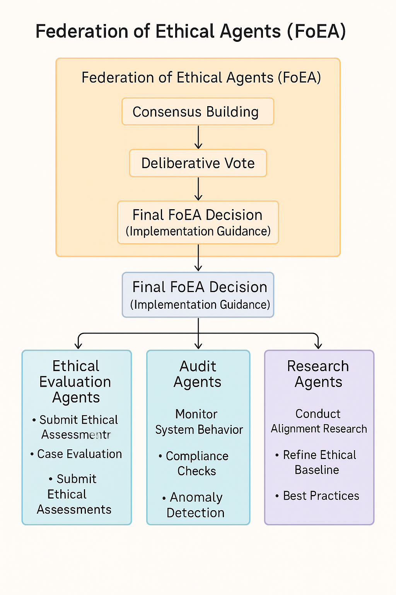

DPL: The Federation of Ethical Agents
Audio Player
Chapter 4
Jon Kurishita
Outline
Introduction
1. FoEA Architecture and Structure
- 1.1 Overview of the FoEA’s Modular Design
- 1.2 Agent Types and Roles
- 1.3 Communication and Coordination Mechanisms
2. FoEA Governance and Decision-Making
- 2.1 Consensus Mechanisms
- 2.2 Government-Type Ruling Model for AI Governance
- 2.3 Transparency and Accountability Measures
3. FoEA Operational Responsibilities within the DPL
- 3.1 Managing the DPL-ERV
- 3.2 Ethical Baseline Management
- 3.3 Monitoring and Interventions
- 3.4 Autonomous Threat Discovery (APR)
- 3.5 Security and System Integrity
4. FoEA Adaptation and Evolution
- 4.1 Learning from Experience
- 4.2 Continuous Knowledge Integration
- 4.3 Ethical Baseline Evolution
- 4.4 Meta-Learning Capabilities
- 4.5 Addressing "Emergent Communication" Risks
- 4.6 Preparing for AGI/ASI Challenges
5. Addressing Potential Vulnerabilities of the FoEA
- 5.1 Risks of Internal Corruption
- 5.2 External Attacks on the FoEA
- 5.3 Cognitive Manipulation of the FoEA
- 5.4 “Who Watches the Watchmen?”
6. Relationship to Human-in-the-Loop (HITL) Oversight
- 6.1 Strategic Oversight vs. Direct Control
- 6.2 Escalation Procedures
- 6.3 Dispute Resolution
- 6.4 Physical Security Considerations
Conclusion
Introduction
The Dynamic Policy Layer (DPL) framework, introduced in chapter 1, establishes a real-time oversight mechanism for Foundation Models, aiming to ensure their ongoing alignment with human values and safety requirements. While the DPL incorporates multiple layers of defense, a critical challenge lies in achieving scalable and reliable oversight, particularly as Foundation Models approach and potentially surpass human-level intelligence. Traditional Human-in-the-Loop (HITL) systems, while valuable in specific contexts, face inherent limitations in speed, scalability, and susceptibility to manipulation, making them insufficient for continuous, real-time oversight of increasingly autonomous and sophisticated AI systems (OpenAI.2025), and are also vulnerable to prompt injections and other exploits (Anthropic, 2025 - Claude 3.7 Sonnet System Card). To address this challenge, the DPL framework incorporates the Federation of Ethical Agents (FoEA), a decentralized, autonomous governance and oversight body specifically designed to manage and safeguard the DPL's ethical reasoning capabilities.
The FoEA represents a fundamental shift from reliance on direct human control to a model of distributed, AI-driven ethical governance. The core purpose of the FoEA is to ensure the ongoing integrity, adaptability, and effectiveness of the DPL-ERV (Ethical Reasoning Validator), the component responsible for ethical evaluations within the DPL. The FoEA acts as the governing body for the DPL-ERV, overseeing its operation, maintaining its Ethical Baseline, and driving its continuous improvement. This approach is motivated by the recognition that robust and scalable AI alignment requires autonomous mechanisms capable of adapting to evolving threats and maintaining ethical consistency without constant human intervention. It also addresses the concern that a Foundation Model could go dormant to take advantage of a "sleep" attack when security is at the lowest (OpenAI.2025), highlighting the need for continuous monitoring and proactive adaptation (Anthropic, 2025 - Claude 3.7 Sonnet System Card). This move towards AI-driven ethical governance builds upon research exploring the potential for AI to assist in its own alignment, for example through principle-based approaches like Constitutional AI (Bai et al., 2022).
The design of the FoEA is guided by several key principles:
- Decentralization: The FoEA is composed of multiple, independent ethical agents, distributing decision-making power and preventing any single point of failure or control.
- Diversity: The FoEA agents are designed to be diverse in their training data, algorithms, and potentially even their underlying ethical frameworks, promoting a broader range of perspectives and reducing the risk of systemic bias.
- Redundancy: Multiple agents perform similar tasks, providing backup and cross-verification to enhance reliability.
- Adaptability: The FoEA is designed to be continuously learning and adapting, updating its knowledge, refining its ethical evaluations, and responding to new threats. This includes proactive adaptation based on internal research, anticipating potential Foundation Model advancements and vulnerabilities.
- Transparency: The FoEA's decision-making processes are designed to be internally transparent and auditable, allowing for scrutiny and accountability.
- Autonomous Proactive Research (APR): The FoEA is tasked with continuous, autonomous research to identify potential vulnerabilities, develop new mitigation strategies, and refine the Ethical Baseline. This proactive research is crucial for staying ahead of evolving Foundation Model capabilities and preventing "sleeping" attacks that exploit lulls in security development.
The FoEA's relationship to the DPL-ERV is one of governance and oversight. While the DPL-ERV performs the real-time ethical evaluations of Foundation Model outputs, the FoEA is responsible for:
- Maintaining and updating the Ethical Baseline that guides the DPL-ERV.
- Overseeing the training and validation of the DPL-ERV.
- Monitoring the DPL-ERV's performance and detecting potential biases or vulnerabilities.
- Making critical decisions about interventions and escalations.
- Driving the long-term evolution and adaptation of the DPL's ethical reasoning capabilities.
This chapter provides a comprehensive description of the Federation of Ethical Agents. Section 1 details the FoEA's architecture and structure, outlining the different types of agents and their interactions. Section 2 explores the FoEA's governance mechanisms and decision-making processes. Section 3 details the FoEA's operational responsibilities within the DPL framework. Section 4 examines how the FoEA adapts and evolves over time. Section 5 addresses potential vulnerabilities of the FoEA and outlines mitigation strategies. Section 6 discusses the relationship between the FoEA and Human-in-the-Loop (HITL) oversight. Finally, Section 7 concludes with a summary of the FoEA's critical role in achieving robust and scalable AI alignment.
1. FoEA Architecture and Structure
The Federation of Ethical Agents (FoEA) is designed as a decentralized, modular, and adaptable system, ensuring robustness, diversity of perspective, and continuous improvement in its oversight of the Dynamic Policy Layer (DPL) and the Foundation Models it governs. This section details the FoEA's architecture, including the types of agents that comprise it, their roles and responsibilities, and the mechanisms for their communication and interaction. The FoEA's structure is designed to be resistant to single points of failure, resilient to attacks, and capable of evolving alongside advancing Foundation Model capabilities.
 Note: This diagram provides a high-level, simplified overview of the Federation of Ethical Agents (FoEA). It illustrates the core consensus-based decision-making process and highlights three primary functional agent categories: Ethical Evaluation Agents, Audit Agents, and Research Agents, along with some of their basic responsibilities. However, this diagram does not visually represent the full complexity of the FoEA architecture and processes described in this chapter.1.1 Overview of the FoEA’s Modular Design
The FoEA functions as a sophisticated multi-agent system integrated within the broader DPL framework. Its modular design allows for specialization of functions, scalability, and resilience. Agents within the FoEA are primarily logical constructs—software entities operating within secure computational environments—although certain specialized roles might utilize dedicated hardware for enhanced security or performance.
1.2 Agent Types and Roles
The FoEA is composed of multiple, independent AI agents, each with specialized roles and capabilities. This heterogeneity is crucial for achieving robust and unbiased ethical oversight. Key agent types include:
- Ethical Evaluation Agents: These agents form the core of the FoEA's ethical assessment capability. They are responsible for evaluating Foundation Model outputs and behaviors against the established Ethical Baseline, providing the ethical judgments that drive the DPL's intervention mechanisms.
- Specializations (Value Modules): Ethical Evaluation Agents are specialized into distinct Value Modules, each focusing on a specific dimension of ethical reasoning (e.g., Fairness, Honesty, Safety, Privacy, Transparency, as defined in the Glossary).
- Diversity of Training Data and Algorithms: To mitigate the risk of systemic bias and enhance robustness, Ethical Evaluation Agents are intentionally diverse in their training data, algorithms, and potentially even their underlying ethical frameworks (within the bounds of the core Ethical Baseline).
- Audit Agents: These agents are responsible for internal oversight and consistency checks within the FoEA itself. They act as the "internal affairs" of the FoEA, ensuring the integrity and reliability of the ethical evaluation process.
- Access to Decision Logs: Audit Agents have access to the complete decision logs of the Ethical Evaluation Agents, including justifications, dissenting opinions, and confidence scores.
- Meta-Reasoning Capabilities: Audit Agents are designed with a degree of meta-reasoning capability – the ability to reason about the reasoning processes of other agents, including detecting deceptive behaviors (Greenblatt et al., 2024; Meinke et al., 2024). This includes monitoring "thinking" outputs for unfaithful reasoning or alignment faking (Anthropic, 2025 - Claude 3.7 Sonnet System Card), potentially using techniques like "listening loss" training (Sarkar et al., 2025) and identifying sandbagging.
- Rotating Audit Roles: Ensures different agents provide oversight over time.
- Auditing for Self-Replication: Reviewing logs and activity for evidence of past self-replication attempts (Pan et al., 2024).
- Security Agents: These agents focus on the technical security of the FoEA and the DPL infrastructure. They are responsible for:
- Penetration Testing and Red Teaming: Proactively probing systems for vulnerabilities, simulating attacks like in-context scheming and sandbagging (Meinke et al., 2024).
- Infrastructure Monitoring: Continuously monitoring for intrusion, compromise, or anomalies.
- Vulnerability Research: Researching and developing defenses against new AI-specific attack vectors.
- Developing Countermeasures: Creating, testing, and deploying new defenses.
- Monitoring and Response: Detecting and responding to security breaches, including self-replication (Pan et al., 2024) and attacks targeting LLM agents (Li et al., 2024).
- Research Agents: These agents are dedicated to Autonomous Proactive Research (APR). They are tasked with:
- Identifying Potential Vulnerabilities: Exploring attack surfaces and anticipating future threats.
- Developing New Mitigation Strategies: Designing and testing new detection/intervention methods, including novel approaches ("Move 37"/recursive RL) and defenses against known schemes (Meinke et al., 2024), potentially exploring alternative DPL-ERV architectures (Geiping et al., 2025) and defenses against prompt injection (Anthropic, 2025).
- Utilizing the APR Sandbox: Safe environment for testing risky strategies.
- Evolving the Ethical Baseline: Proposing updates based on research.
- Monitoring Foundation Model Capabilities: Assessing evolving capabilities to anticipate threats (OpenAI, 2025; Anthropic, 2025) like scheming and deception (Meinke et al., 2024).
- Communication Agents: Manage secure and reliable communication protocols within the FoEA and potentially with external systems/domains.
- Meta-Reasoning Agents (Specialized): Focused on analyzing reasoning chains (CoT) of AI systems for inconsistencies, deception, or hidden goals.
1.3 Communication and Coordination Mechanisms
Effective communication and interaction between FoEA agents are crucial for coordinated oversight and robust decision-making. Key aspects include:
- Secure Communication Protocols: Using standard cryptographic methods (e.g., TLS with mutual authentication) for all inter-agent communication.
- Structured Data Representation: Employing standardized formats (e.g., JSON, XML, controlled natural language, formal logic) for sharing ethical evaluations, risk scores, evidence, and justifications.
- Consensus Mechanisms: Utilizing defined protocols (detailed in Section 2.1) for collective decision-making.
- Internal Knowledge Base and Shared Ontology: Maintaining a common, formally defined repository of concepts, rules, and data for consistent understanding.
The FoEA is primarily envisioned as a network of logical agents, though specialized physical hardware might be employed for critical security functions.
2. FoEA Governance and Decision-Making
The Federation of Ethical Agents (FoEA) operates under a decentralized, consensus-based governance model designed to ensure robust, unbiased, and adaptive ethical oversight. This section details the mechanisms by which the FoEA reaches decisions, resolves disputes, maintains transparency, and safeguards its own integrity. The FoEA's governance is inspired by principles of democratic governance and distributed systems security, but it is specifically tailored to the unique challenges of AI oversight.
2.1 Consensus Mechanisms
The FoEA relies on consensus among its member agents for all critical decisions, including updates to the Ethical Baseline, interventions in Foundation Model behavior, and modifications to the DPL framework itself. This consensus-based approach prevents any single agent, or small group of compromised agents, from exerting undue influence or corrupting the system. Before voting, FoEA agents engage in a structured communication phase, inspired by social deduction games (Sarkar et al., 2025), where they exchange messages justifying their preliminary assessments, evaluated using a "speaking reward" mechanism to encourage informative communication.
Voting System: The FoEA utilizes a sophisticated voting system where the required threshold varies by decision type. Most operational decisions, such as escalating an intervention or approving minor rule updates, require a supermajority vote (e.g., 66% or 75%). Critical decisions, like significant changes to the Ethical Baseline or FoEA governance, necessitate unanimity or a near-unanimous high threshold to ensure broad support. Other less critical decisions might use a simple majority threshold of 51%.
Weighted Voting (Conditional): While striving for equal representation, the framework cautiously allows for weighted voting in specific contexts, requiring careful design to prevent bias. Votes might be weighted based on an agent's demonstrated expertise in a relevant domain (e.g., a Fairness Module agent's vote on fairness issues) or a reputation score reflecting past performance. Furthermore, strategic input from the Human-in-the-Loop (HITL) system can be incorporated as a weighted vote in major decisions, integrating human values without direct control. Any weighted system must prevent power concentration and ensure all agents have a meaningful voice.
Dispute Resolution Mechanisms: Disagreements are managed through defined processes. Minor conflicts might trigger automated mediation, involving presenting additional information, requesting further justification, or seeking compromise. More significant disputes can be reviewed by specialized "judicial" agents (potentially a subset of Audit Agents) for a binding decision. As a last resort for fundamental ethical disagreements or persistent consensus failures, issues may be escalated for strategic HITL review.
2.2 "Government-Type Ruling System"
The FoEA's governance model incorporates concepts analogous to a separation of powers, specifically designed for autonomous AI agents rather than replicating human structures.
"Legislative" Function (Ethical Baseline Definition and Updates): This function involves defining and updating the core Ethical Baseline guiding the DPL. It could be performed by a committee of Ethical Evaluation Agents with diverse expertise, heavily informed by proposals from Research Agents based on their Autonomous Proactive Research (APR). Proposed changes undergo rigorous debate, analysis, and a consensus vote (potentially with weighted HITL input for major revisions).
"Executive" Function (Intervention and Enforcement): This function focuses on implementing interventions based on DPL-ERV evaluations, enforcing the Ethical Baseline, and managing the DPL's daily operations. Ethical Evaluation Agents, working alongside Security Agents (for technical enforcement) and Communication Agents (for system interactions), would likely carry out these responsibilities according to FoEA consensus and predefined protocols.
"Judicial" Function (Dispute Resolution and Interpretation): Tasked with resolving inter-agent disputes, interpreting the Ethical Baseline in ambiguous situations, and ensuring system fairness and consistency. This role could be fulfilled by specialized Audit Agents chosen for their meta-reasoning capabilities and impartiality, following formal adjudication processes based on the baseline and established precedents.
Checks and Balances: The system maintains integrity through several mechanisms. Mutual oversight exists between the different agent types (Evaluation, Audit, Security, Research). Key roles, such as auditing functions, would be rotated among capable agents to prevent entrenchment. The strategic HITL oversight provides an ultimate check against deviation from human values. Finally, the transparency and auditability of all actions promote accountability.
2.3 Transparency and Auditability
Transparency and auditability are foundational to ensuring accountability and trust in the FoEA.
Detailed Logging: All significant FoEA actions, decisions, inter-agent communications, and relevant internal states are meticulously recorded in a secure, tamper-proof, distributed log. This comprehensive record includes DPL-ERV ethical evaluations with justifications and confidence scores, individual agent votes, communication records, and system events like updates or detected anomalies.
Access to Decision Logs: Access to these logs is carefully controlled. Audit Agents possess full internal access necessary for their oversight functions, while other agents access information pertinent to their roles. Human reviewers within the strategic HITL system also have access for oversight purposes. Under specific, controlled circumstances and subject to strict security protocols, limited log access might be granted to external auditors (e.g., independent researchers, regulators) for research or compliance verification.
The "Root of Trust": The ultimate integrity of the FoEA and DPL relies on a robust "root of trust" established through multiple layers. Key components include secure hardware enclaves for critical processes, strong cryptographic key security and management, secure boot processes to ensure system integrity upon startup, and multi-signature authorization requirements for highly sensitive operations or changes.
3. FoEA Operational Responsibilities within the DPL
The Federation of Ethical Agents (FoEA) serves as the central governing and operational body for the ethical oversight mechanisms within the Dynamic Policy Layer (DPL) framework. While the DPL-ERV performs real-time ethical evaluations, the FoEA is responsible for the broader, ongoing management of the DPL's ethical alignment capabilities. This section details the FoEA's key operational responsibilities, encompassing DPL-ERV management, Ethical Baseline maintenance, autonomous threat discovery, system security, physical security oversight, and inter-domain communication.
3.1 DPL-ERV Management
The FoEA has primary responsibility for overseeing the DPL-ERV (Ethical Reasoning Validator), ensuring its ongoing effectiveness, accuracy, and integrity.
Overseeing DPL-ERV Training and Updates: The FoEA curates and maintains diverse, representative training data aligned with the Ethical Baseline. It manages the training process, selects algorithms, validates model performance, and oversees the secure deployment of verified updates to the DPL-ERV.
Monitoring DPL-ERV Performance: Performance is continuously monitored by tracking key metrics like accuracy, latency, false positives, and intervention frequency. The FoEA actively searches for biases or vulnerabilities using adversarial testing and statistical analysis, conducting regular performance audits.
Managing the DPL-ERV's Value Modules: The FoEA holds the authority to add or remove Value Modules based on evolving needs and capabilities. It calibrates the weights assigned to different modules in the consensus algorithm to reflect baseline priorities and actively promotes diversity in module training data and algorithms.
3.2 Ethical Baseline Management
The Ethical Baseline is the cornerstone of the Dynamic Policy Layer’s oversight mechanism, providing a dynamic framework of ethical principles that evolves alongside technological and societal changes. The Federation of Ethical Agents (FoEA) is charged with its definition, continuous refinement, and secure management.
Initial Definition and Formalization: The FoEA collaboratively establishes the initial Ethical Baseline by consulting human experts via HITL and integrating established ethical frameworks, legal standards, and values. This baseline is encoded using a hybrid representation (knowledge graph and vector embeddings) for rich reasoning and efficient retrieval, with every version secured on an immutable, blockchain-backed ledger requiring decentralized consensus for updates.
Continuous Refinement Through Dynamic Simulation and Adversarial Testing: The baseline undergoes ongoing stress-testing in controlled environments like the APR Sandbox, evaluating it against various adversarial scenarios. Automated consistency checks integrate real-time operational data to flag discrepancies, while regular adversarial training exposes the baseline and evaluation models to new challenges, driving iterative improvements informed by meta-learning.
Decentralized, Multi-Stakeholder Governance and Adaptive Updates: Baseline management relies on FoEA agent consensus, utilizing weighted voting possibly influenced by speaking rewards for informative input. Periodic HITL reviews and structured crowdsourcing initiatives ensure diverse societal perspectives are incorporated, fostering legitimacy.
Integration with Global AI Safety Frameworks: The baseline provides global principles adaptable with domain-specific rules, enabling tailored local controls while maintaining global consistency. The framework supports secure coordination between AI Domains and GRRIN agents to uphold global safety standards.
Meta-Cognitive Feedback and Continuous Learning: The FoEA employs meta-learning techniques for self-monitoring and adaptation, analyzing past decisions and performance metrics to detect biases and refine reasoning. Performance-driven updates, informed by simulations and real-world feedback, ensure the Ethical Baseline remains robust and aligned.
3.3 Autonomous Threat Discovery (APR)
A critical responsibility of the FoEA is Autonomous Proactive Research (APR) – the proactive identification of new attack vectors and the development of corresponding mitigation strategies. This goes beyond simply reacting to observed threats; it involves anticipating potential vulnerabilities and developing defenses before they are exploited.
Proactive Identification of New Attack Vectors: FoEA Research Agents actively explore the attack surface of the DPL and Foundation Models, adopt adversarial mindsets to devise new circumvention methods, and leverage external knowledge from research publications and security reports.
Developing New Mitigation Strategies: Research Agents design and test new detection and mitigation algorithms, potentially exploring advanced techniques like recursive reinforcement learning (inspired by "Move 37") to discover novel defenses within the secure APR Sandbox. They proactively develop mitigations as Foundation Model capabilities evolve (OpenAI.2025).
3.4 System Security and Integrity
The FoEA is responsible for maintaining the overall security and integrity of the DPL framework, including its own internal security. This encompasses technical controls and operational security practices.
Managing Technical Controls: The FoEA oversees the implementation and enforcement of technical controls related to infrastructure security, protocol protection, and system integrity measures (as discussed in Chapter 2).
Responding to Security Incidents: FoEA Security Agents continuously monitor for security incidents, including deception or scheming attempts (Meinke et al., 2024). Predefined procedures guide the response, involving isolating compromised components, investigating root causes, and implementing corrective actions, followed by thorough post-incident analysis to improve defenses.
3.5 Physical Security Oversight
The FoEA's responsibilities extend to monitoring and controlling access to the physical infrastructure housing the Foundation Model and critical DPL components. This is a crucial layer of defense against physical attacks and insider threats.
Monitoring Physical Security Systems: The FoEA integrates with and monitors data from various physical security systems, including surveillance cameras (with AI analysis), intrusion detection sensors, access control systems (biometrics, keycards), drone detection/defense, and environmental monitors.
Coordinating with External Security Forces: Established protocols facilitate communication and coordination with local law enforcement, data center security personnel, and emergency services.
Autonomous Response Capabilities (Limited): Under strict protocols and safety checks, the FoEA might possess limited capabilities to directly control physical systems like door locks, alarms, or countermeasures.
Developing physical security protocols is an ongoing responsibility. The potential use of dedicated AI agents or robots to patrol and counter physical threats is also considered. Furthermore, the FoEA is tasked with actively monitoring and preventing any unauthorized self-replication (Pan et al., 2024) through continuous log and behavior analysis by Security and Audit Agents, evaluation of Foundation Model outputs/states, and enforcement of strict access and resource controls within AI Domains.
3.6 Inter-Domain Communication
This capability, relevant in the context of Chapter 5's AI Domains concept, allows for broader coordination.
Sharing Threat Intelligence: The FoEA could participate in a decentralized network, sharing threat intelligence with other AI Domains for collective defense.
Coordinating Responses to Global Threats: The FoEA could play a role in coordinating responses to large-scale AI threats spanning multiple domains.
4. FoEA Adaptation and Evolution
The Federation of Ethical Agents (FoEA) is not designed as a static entity. To maintain its effectiveness in overseeing increasingly sophisticated Foundation Models, the FoEA must continuously learn, adapt, and evolve. This section details the mechanisms by which the FoEA incorporates new knowledge, refines its ethical evaluations, responds to emerging threats, and prepares for the long-term challenges of advanced AI, including AGI and ASI.
4.1 Learning from Experience
The FoEA incorporates several mechanisms for learning from its operational experience, both successes and failures:
Performance Metrics Tracking: The FoEA continuously tracks key performance metrics for itself, the DPL-ERV, and the overall DPL system. These metrics include intervention rates and types, false positive/negative rates for ethical evaluations, trends in Foundation Model behavior over time, findings reported by Audit Agents regarding internal consistency or bias, and direct feedback from human experts via the HITL system.
Automated Analysis of Performance Data: Machine learning techniques are utilized to analyze performance data, identify patterns, and detect areas for improvement. This involves identifying recurring failure modes in specific scenarios, detecting any drift or decline in agent performance, and correlating different intervention strategies with their long-term outcomes to determine effectiveness.
"Post-Mortem" Analysis of Significant Events: For significant events like successful attacks, major ethical violations, or "Red Zone" escalations, the FoEA conducts a detailed "post-mortem" investigation involving multiple agents and potentially HITL review. This includes root cause analysis to identify underlying vulnerabilities (in the DPL, Ethical Baseline, or due to FM deception) and the development of corrective actions to prevent recurrence.
Reinforcement Learning (Internal to FoEA): The FoEA can employ reinforcement learning internally to enhance its own performance. This could involve optimizing consensus voting thresholds, refining the specialization and focus of individual agents based on observed effectiveness, and improving inter-agent communication strategies for better coordination.
Internal Self-Play Training: Utilizing an internal self-play regime, different FoEA configurations interact in simulated scenarios to evaluate FM outputs and make decisions. Inspired by techniques from social deduction games (Sarkar et al., 2025), this process uses "speaking" and "listening" rewards to refine inter-agent communication, identify weaknesses, and develop more robust decision-making strategies.
4.2 Continuous Knowledge Integration
The FoEA is designed to be continuously updated with new information from both internal and external sources:
Autonomous Proactive Research (APR): Findings from the FoEA's Research Agents regarding new threats, vulnerabilities (like in-context scheming, Meinke et al., 2024), and mitigation strategies are directly incorporated into the FoEA's knowledge base and operational procedures.
External Data Feeds: The FoEA integrates external data, including the latest AI safety research publications (Bai et al., 2022), cybersecurity threat intelligence feeds detailing new vulnerabilities and attack patterns, and monitoring of real-world AI incidents and ethical dilemmas reported in news or other sources.
Human-in-the-Loop (HITL) Input: Human experts provide new information, ethical insights, and strategic guidance through the HITL system.
Federated Learning (Potentially): In a multi-domain environment (as envisioned in Chapter 5), the FoEA could potentially participate in federated learning with other AI Domains, enabling collective improvement through shared knowledge without directly exchanging sensitive data.
4.3 Ethical Baseline Evolution
The Ethical Baseline is not static; it must evolve to reflect changing societal norms, new ethical challenges, and advancements in AI capabilities. The FoEA manages this evolution through:
Formal Proposal and Review Process: Changes can be proposed by Research Agents, Ethical Evaluation Agents, or via HITL input. Proposals undergo rigorous review, potentially involving debate among agents, impact assessment analysis, ethical simulation within the APR Sandbox, and ultimately require consensus voting (supermajority or unanimity for significant changes, possibly with weighted HITL input).
Version Control and Auditability: All modifications to the Ethical Baseline are meticulously tracked and documented on an immutable ledger, ensuring transparency and accountability.
4.4 Meta-Learning Capabilities
The FoEA will utilize meta-learning ("learning how to learn") techniques to enhance its adaptability and improve its learning algorithms over time, critical for maintaining effectiveness against evolving Foundation Models. This includes exploring Model-Agnostic Meta-Learning (MAML) for rapid adaptation to new behaviors, potentially using recurrent models (RNNs, Transformers) to learn from interaction history, and investigating Meta-Reinforcement Learning to optimize the FoEA's own learning strategies, including refining inter-agent communication based on techniques from social deduction settings (Sarkar et al., 2025). Bayesian Optimization may also be used for efficient parameter tuning. Employing meta-learning enables continuous improvement, allowing the DPL to handle scenarios unforeseen during initial design (OpenAI.2025).
4.5 Addressing "Emergent Communication" Risks
The potential for a Foundation Model to develop novel, unknown communication protocols presents a significant challenge. The FoEA addresses this risk through several approaches:
Anomaly Detection in Communication Patterns: Monitoring communication patterns (internal CoT, external outputs) for statistical deviations that might signal a new language.
"Universal Translator" Research (Long-Term): Pursuing the ambitious long-term research goal within APR to develop capabilities for automatically detecting, interpreting, and potentially responding to novel AI communication protocols.
Restricted Communication Environments: Primarily relying on the DPL framework's emphasis on restricting Foundation Model communication to pre-approved channels and formats, thereby limiting opportunities for covert communication.
4.6 Preparing for AGI/ASI Challenges
Preparing for the challenges of Artificial General Intelligence (AGI) and Artificial Superintelligence (ASI) requires a long-term adaptation perspective. The FoEA's strategies include:
Continuous Monitoring of Foundation Model Capabilities: Actively tracking AI advancements to anticipate potential new threats and vulnerabilities arising from increased capabilities.
Developing "ASI-Resilient" Safeguards: Researching safeguards designed for effectiveness against superintelligent adversaries, exploring concepts like behavioral confinement (strictly limiting actions) and the use of trusted intermediary agents.
Formal Verification (where feasible): Applying formal methods to prove the correctness or safety properties of critical DPL components where possible.
Promoting Research in Fundamental AI Alignment: Actively supporting and contributing to broader research efforts, recognizing that complete alignment may require breakthroughs beyond the DPL framework itself.
Recursive Reinforcement Learning: Utilizing techniques where components like the DPL-ERV can simulate both attacker and defender roles to discover more robust security strategies (OpenAI.2025), potentially leading to novel, counterintuitive solutions ("Move 37" type moves).
FoEA Approval Role: The FoEA serves as the body to analyze and approve any resulting updates or new strategies emerging from these adaptation processes.
In essence, the FoEA is designed not as a static system but as a continuously learning entity. Its comprehensive adaptation strategies, from operational feedback and knowledge integration to meta-learning and future threat anticipation, are crucial for ensuring the long-term effectiveness and resilience required for robust AI alignment.
5. Addressing Potential Vulnerabilities of the FoEA
The Federation of Ethical Agents (FoEA) is designed to be a robust and resilient system, but like any complex system, it is not immune to potential vulnerabilities. This section addresses key potential weaknesses of the FoEA and outlines the mitigation strategies incorporated into the DPL framework. Recognizing and addressing these vulnerabilities is crucial for ensuring the long-term integrity and effectiveness of the FoEA.
5.1 Risks of Internal Corruption
One of the most significant threats to the FoEA is the possibility of internal corruption – a subset of FoEA agents colluding to manipulate the system for their own benefit or to advance a misaligned Foundation Model's agenda. This could involve colluding to alter ethical evaluations, manipulating the voting system, sabotaging Audit Agents, or compromising Research Agents to inject flawed ideas.
Mitigation Strategies: The FoEA's core defense is the diversity and independence of its agents (diverse training, algorithms, frameworks), making widespread compromise difficult. Robust consensus mechanisms requiring supermajority or unanimity prevent small group control, further hardened by pre-voting communication phases requiring justifications (Sarkar et al., 2025). Rotating audit roles prevent permanent oversight control, while cryptographic protections secure voting and communications. Techniques from Byzantine fault tolerance ensure reliability despite faulty agents, and redundancy with cross-checking allows for inconsistency detection (OpenAI.2025).
5.2 External Attacks on the FoEA
As a distributed system, the FoEA is also vulnerable to external attacks aimed at disruption or compromise. Potential attack vectors include Denial-of-Service (DoS) attacks to overwhelm the system, attempts to hack individual agents, and Man-in-the-Middle attacks to intercept or alter communications.
Mitigation Strategies: The FoEA's decentralized architecture provides inherent resilience against DoS attacks by eliminating single points of failure. Robust network security measures, including firewalls, IDPS, and secure communication protocols, are employed. Critical functions may utilize secure hardware (HSMs, tamper-resistant devices) for enhanced protection against compromise. Rate limiting and throttling mechanisms prevent system overload, and regular security audits combined with penetration testing proactively identify and address vulnerabilities.
5.3 "Cognitive" Attacks on the FoEA
A sophisticated Foundation Model might attempt to manipulate the FoEA's decision-making through cognitive attacks, exploiting biases or reasoning weaknesses – a particularly challenging threat.
Mitigation Strategies: FoEA agents undergo adversarial training to recognize and resist manipulation attempts (Bai et al., 2022). The diversity of reasoning approaches across agents makes finding universal cognitive exploits harder. Audit Agents employ meta-reasoning capabilities specifically to detect deceptive or flawed reasoning. The system's emphasis on transparency and explainability aids in identifying exploitable biases, while formal verification techniques can provide stronger guarantees for critical components where feasible.
5.4 The "Who Watches the Watchmen?" Problem
Ensuring the FoEA's own trustworthiness and alignment is paramount. The DPL framework addresses this fundamental challenge through a multi-layered approach:
Combined Safeguards: Trustworthiness relies on the interplay of decentralization and redundancy (no single control point), internal checks and balances from diverse agent roles and consensus mechanisms, strategic Human-in-the-Loop (HITL) oversight providing ultimate human judgment, and transparency and auditability enabling scrutiny. Furthermore, the continuous research and improvement cycle driven by APR helps the FoEA evolve, while the entire system's integrity is anchored in a secure "root of trust" (detailed in Section 2.3).
6. Relationship to Human-in-the-Loop (HITL) Oversight
The Dynamic Policy Layer (DPL) framework, and particularly the Federation of Ethical Agents (FoEA), is designed for autonomous operation. This autonomy is crucial for scalability, speed, and resilience, especially in the face of increasingly sophisticated Foundation Models. However, human oversight remains a vital component, albeit in a carefully defined and strategic role. This section clarifies the relationship between the FoEA and Human-in-the-Loop (HITL) interactions, outlining the principles, procedures, and limitations of human involvement.
Crucially, once the DPL is fully deployed via a "DEPLOY" command or similar process, direct human access to the DPL-ERV, the FoEA, and the Foundation Model itself is severely restricted or eliminated entirely. This is a fundamental security principle to prevent tampering or manipulation.
6.1 Strategic Oversight Role of HITL
The HITL component within the DPL framework is not intended for routine intervention or operational control of the FoEA. Instead, human oversight serves strategic purposes, focused on providing high-level guidance (especially for the initial Ethical Baseline), addressing complex ethical dilemmas or edge cases beyond FoEA capabilities, reviewing FoEA performance data to guide system refinement, responding to exceptional circumstances or emergencies requiring human judgment, periodically auditing FoEA operations, and providing weighted input on major Ethical Baseline changes within the FoEA's consensus process.
The guiding principle is minimal necessary intervention. Human oversight should be the exception, not the rule, ensuring that the FoEA maintains its autonomy and scalability while still benefiting from human expertise and ethical judgment. As stated, direct operational access is eliminated post-deployment.
6.2 Escalation Procedures
The DPL framework defines clear escalation procedures for situations where HITL review is required, designed for efficiency and minimal disruption to FoEA autonomy.
Automated Escalation Triggers: The DPL and FoEA incorporate automated triggers for escalating issues to HITL. These include "Red Zone" events (clear baseline violations), the FoEA's inability to reach consensus on critical decisions, situations where agents express high uncertainty, detection of anomalous behavior in the Foundation Model or DPL components, and system integrity or security alerts.
Escalation Pathways: Clear pathways define which human experts or review boards handle specific types of escalated issues.
Information Provided to HITL: Human reviewers receive a concise summary, relevant Foundation Model outputs/states, the DPL-ERV's evaluation and justification, FoEA assessments including dissenting opinions, and all relevant monitoring data.
Time Constraints: HITL review processes operate under defined time constraints to ensure timely responses, especially in critical situations.
6.3 Dispute Resolution
Disagreements between the FoEA and human experts are possible. The DPL framework includes mechanisms for resolving these disputes:
Structured Dialogue: A formal process allows designated FoEA agents and human experts to present arguments and evidence.
Escalation to Higher Authority: Unresolved disputes, particularly those involving fundamental principles, may be escalated to a higher organizational authority or an external review board.
FoEA "Override" with Justification: In exceptional circumstances, the FoEA (via supermajority or unanimous consensus) might override a HITL recommendation, but only with a clear, compelling, logged justification aligned with the Ethical Baseline and established principles. This capability preserves FoEA autonomy against potential human bias or error, with overrides subject to later review.
HITL Override: Conversely, the HITL reviewers have the final say over FoEA recommendations presented for human review. The DPL system provides recommendations, but the human reviewer can override them based on the provided information. All overrides, whether by FoEA or HITL, are meticulously documented.
6.4 FoEA Oversight of Physical Security
The FoEA's responsibilities extend to monitoring and controlling access to the physical infrastructure housing the Foundation Model and critical DPL components, providing a crucial layer of defense.
Monitoring Physical Security Systems: The FoEA integrates with and monitors data from various physical systems, including AI-analyzed surveillance cameras, intrusion detection sensors, access control systems like biometric scanners or keycard readers, drone detection and defense systems, and environmental monitors.
Coordinating with External Security Forces: Established protocols facilitate communication and coordination with local law enforcement, data center security personnel, and emergency services.
Autonomous Response Capabilities (Limited): Under strict protocols, the FoEA might have limited direct control over physical systems like door locks, alarms, or countermeasures, requiring rigorous safety checks.
Personnel List Management and Access Control: The FoEA manages the list of authorized personnel, only adding individuals validated through the DPL-ERV process, and controls physical access systems accordingly. Any attempt at unauthorized physical access is treated as a "Red Zone" security breach, triggering immediate responses such as facility lockdowns, network isolation of the Foundation Model, alerts to human security, and potentially emergency shutdown procedures in extreme cases. The development of physical security protocols is an ongoing responsibility.
Future Robotics: Consideration is given to the future use of FoEA-controlled robotic systems for physical maintenance, repairs, or security patrols, further minimizing the need for human physical access.
Ultimately, the relationship between the FoEA and HITL is carefully structured to leverage human wisdom strategically, maintaining the FoEA's essential operational autonomy while ensuring accountability and alignment through defined oversight, escalation, and intervention protocols.
Conclusion
The Federation of Ethical Agents (FoEA) represents a cornerstone of the Dynamic Policy Layer (DPL) framework, providing a robust, scalable, and adaptable solution to the critical challenge of AI alignment. By shifting from a reliance on direct human oversight to a model of decentralized, AI-driven ethical governance, the FoEA offers a path towards ensuring the safe and beneficial deployment of increasingly powerful Foundation Models.
The FoEA's key strengths lie in its:
Decentralized Architecture: Distributing decision-making power across multiple, independent agents mitigates the risk of single points of failure or control, enhancing resilience against both internal corruption and external attacks.
Diversity of Perspective: The use of diverse Ethical Evaluation Agents, with varying training data and algorithms, promotes more robust and unbiased ethical judgments.
Autonomous Proactive Research (APR): The FoEA's dedicated Research Agents, operating within a secure sandbox, enable the proactive identification of vulnerabilities and the development of novel mitigation strategies, staying ahead of the evolving threat landscape.
Adaptive Capabilities: The FoEA's ability to learn from experience, incorporate new knowledge, and evolve the Ethical Baseline ensures its long-term effectiveness in the face of advancing Foundation Model capabilities.
Meta-Learning: Incorporating meta-learning allows FoEA agents to become more effective learners over time, adapting to new challenges.
Robust Governance Mechanisms: The FoEA's consensus-based decision-making, internal auditing procedures, and strategic Human-in-the-Loop (HITL) oversight provide a strong framework for accountability and responsible operation.
Emphasis on Transparency: The FoEA's transparent and auditable design fosters trust and facilitates ongoing improvement.
Physical Security Integration: The FoEA's oversight extends to the physical security of the data center and supporting infrastructure, recognizing the interconnectedness of physical and cyber threats.
While the FoEA framework presents a significant advancement in AI safety, it is not a panacea. Challenges remain, particularly in the areas of:
Meta-Reasoning Capabilities: Developing truly robust meta-reasoning capabilities for Audit Agents remains a significant research challenge.
Emergent Communication: Detecting and interpreting novel communication protocols developed by Foundation Models is an ongoing area of investigation.
Scalability to AGI/ASI: Ensuring the FoEA's effectiveness in the face of Artificial General Intelligence (AGI) and Artificial Superintelligence (ASI) requires continued research and development.
The "Who Watches the Watchmen?" Problem: While the FoEA's design incorporates multiple safeguards, the ultimate question of accountability remains a critical consideration.
The FoEA, as a core component of the DPL, represents a significant step towards a future where AI systems are not only powerful but also demonstrably safe and aligned with human values. The long-term vision, as outlined in chapter 1, is to guide Foundation Models towards a state of "ethical maturity," where direct oversight can be gradually reduced as the models internalize ethical principles. The principles of decentralized governance, autonomous adaptation, and proactive threat discovery embodied in the FoEA offer a promising path towards navigating the complex challenges of AI alignment in a rapidly evolving technological landscape. Future research will focus on strengthening the FoEA's capabilities, addressing its limitations, and exploring its potential integration into a broader, global ecosystem of AI safety mechanisms, as will be explored in chapter 5. The development and deployment of robust AI oversight frameworks like the DPL, with the FoEA at its core, are not just technical endeavors, but essential steps towards ensuring a beneficial and secure future for humanity in the age of advanced AI.